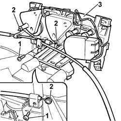

5020B14 HEATER CONTROL SUPPORT - R+R WITH HEATER UNIT REMOVED
- Path
- Procedures > 50 AUXILIARY UNITS > 5020 HEATER > 5020B HEATER CONTROLS > 5020B14 HEATER CONTROL SUPPORT - R+R WITH HEATER UNIT REMOVED
- Kind
- repair procedure (removal / refitting; the operation number is the code)
- Applies to
- all engines; all production periods
- Interactive page
- https://sloeber94.github.io/elrnDB-fDct/en/#/244001245
Applies to: all engines; all production periods
 Removing
Removing
 Refitting
Refitting- Mark the control cables.
- Disconnect the electrical connection.
1. Undo the retaining bolts.
2. Disconnect the control cables.
3. Remove the heater controls support.

Applies to: all engines; all production periods
Refitting
Removing- Position the heater controls support.
- Connect the control ca bles and tighten the fixing bolts.
- Connect the electrical connection.